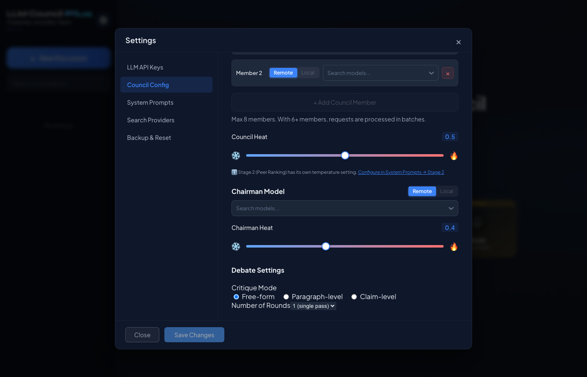
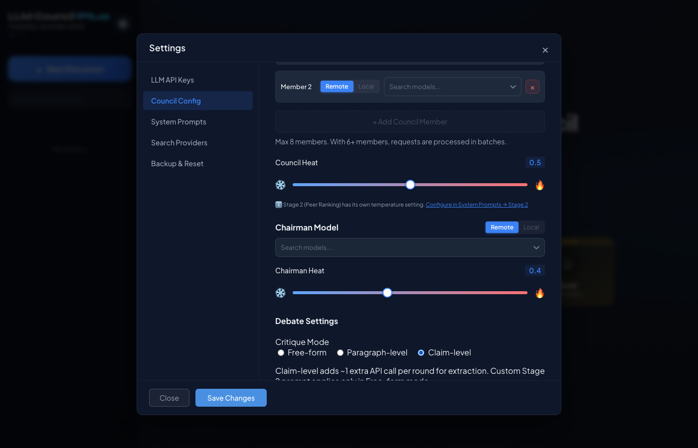

LLM Council Plus — Iterative Debate Phase 2 —
Branch: feat/iterative-debate-phase2 —
Date: 2026-05-18 —
PR: #11
Three mutually exclusive critique modes available in Settings → Council Config → Debate Settings.


The backend validates critique_mode on PUT /api/settings and returns 400 for invalid values.
20 new tests added for Phase 2 (paragraph, claim aggregation, cross-pollination, JSON repair).
| Test File | Tests | Coverage |
|---|---|---|
test_debate.py |
23 +12 new | convergence, truncation, paragraph segmentation, claim aggregation, cross-pollination |
test_debate_integration.py |
8 | multi-round orchestration, convergence, prompt override |
test_json_repair.py |
8 new file | JSON extraction, repair, markdown fence, arrays, edge cases |
test_settings_backup.py |
10 | export, import, reset, auth |
How claim-level critique mode works across the 3-stage pipeline:
backend/debate.py — orchestrator extended for claim/paragraph paths (+490 lines)backend/council.py — per_model_messages, Stage 2 prompt_overridebackend/json_repair.py — JSON extraction and repair for LLM outputbackend/prompts.py — 7 new prompt templates (+116 lines)backend/main.py — accept paragraph/claim in validationbackend/tests/test_debate.py — 12 new testsbackend/tests/test_json_repair.py — 8 testsfrontend/src/components/ClaimCards.jsx — claim card UI with expandable verdictsfrontend/src/components/ClaimCards.css — glassmorphic stylingfrontend/src/components/Stage2.jsx — renders ClaimCards when data presentfrontend/src/components/ChatInterface.jsx — passes claim metadata throughfrontend/src/components/Settings.jsx — critiqueMode statefrontend/src/components/settings/CouncilConfig.jsx — critique mode radio UI| Commit | Message |
|---|
| Feature | Description | Status |
|---|---|---|
| Claim Extraction | Chairman decomposes responses into canonical falsifiable claims | Done |
| Claim Evaluation | Peers rate each canonical claim: strong/weak/flawed with reasons | Done |
| Cross-Pollination | Models see top-rated claims from other models in round N+1 | Done |
| Per-Model Prompts | Each model gets personalized revision prompt with own critiques | Done |
| Paragraph Mode | Pre-numbered [Para N] markers for stable paragraph evaluation | Done |
| JSON Repair | Extraction and repair of malformed LLM JSON output | Done |
| ClaimCards UI | Expandable cards grouped by model, color-coded verdicts | Done |
| Settings UI | Radio buttons for critique mode with cost hints | Done |
| Graceful Degradation | Claim extraction timeout/failure falls back to freeform | Done |